Which storm appears stronger?
An important part of estimating the strength of a storm is knowing whether that storm is getting stronger, weaker or staying about the same. To help us with that, the first step of most classifications is to ask which of two images looks stronger. These are actually two images of the same storm taken within 24 hours.
If the image you see is from the first 24 hours of the storm (or the image 24 hours prior is missing) then you’ll skip this step.
A number of characteristics determine whether a storm is stronger, weaker or about the same. There are two main measures of strength to look for:
1. How cold are the clouds?
Colder colors in infrared imagery indicate taller clouds that release more energy into a storm. Stronger tropical cyclones tend to have taller clouds and more of them. For example:
- The presence of more colder colored clouds in an embedded center suggest a stronger storm.
- Colder clouds surrounding an eye suggest a stronger storm.
2. How organized are the clouds?
This question is a bit more subjective, so just give it your best shot. Some features that might indicate which storm image is stronger:
- Stronger storms have spirals that wrap farther around the storm.
- The cold clouds near the center become more circular as a storm strengthens.
- Typically Shear and Curved Band storms are weaker than those with an Embedded Center.
- Storms with an eye are almost always stronger than storms without one.
- For storms with an eye, consider the shape, size and color of the eye. Eyes that are more circular, smaller and/or warmer tend to be associated with stronger tropical cyclones.
In some cases, the storm on the left may appear to have some of these characteristics, while the storm on the right may appear to have others. If this is the case, they can actually cancel out, in which case we would say that they are about the same. For example: If the storm on the left appears better organized and more tightly-wrapped, but the storm on the right has more cold colors, you would say that they are about the same.
You can use the images below to help you gauge a storm’s relative strength.
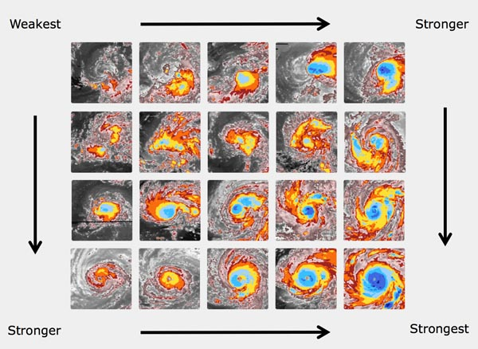
Eye Storms
Eye storms are the most easily recognized of tropical cyclones, defined by their characteristic “eye” in the center of the storm. The eye is a warmer area in the center of the storm, surrounded by colder clouds (the “eyewall”). In stronger storms, the eye will appear as pink or gray, but it may simply be a circular area of clouds that are warmer clouds. Remember white and blue are the coldest clouds while pink and gray are the warmest clouds.
Stronger eye storms typically have the following characteristics:
- More circular or warmer eye
- Colder clouds in the eyewall
- Spiral bands that wrap farther around the eyewall
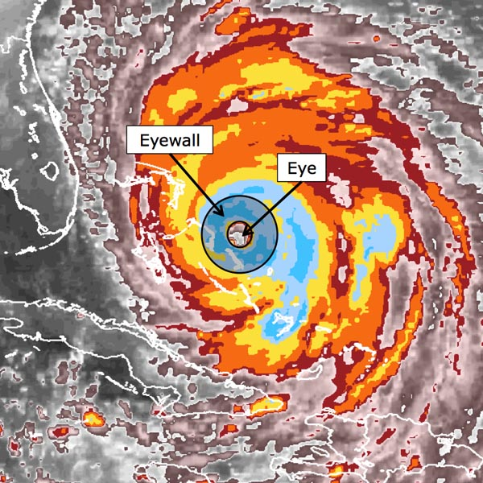
Embedded Center Storms
Embedded Center storms are recognized by a relatively round area of colder clouds near the center of a storm. With regard to strength, these storms generally fall between Curved Bands and Eye Storms. The weakest Embedded Center storms will often resemble Curved Bands, while the very strongest of Embedded Center storms may start to develop an eye.
Characteristics of stronger Embedded Center storms include the following:
- Colder clouds near the center of the storm
- Center looks more circular than surrounding areas
- Pronounced spiral bands
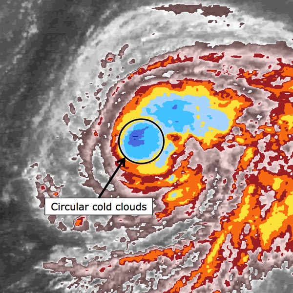
Curved Band Storms
Curved Band storms are often more disorganized and more difficult to identify than Eye Storms or Embedded Centers. They are generally shaped like commas and may resemble a very weak Embedded Center. However, unlike Embedded Centers, they do not have a round area of cold cloud near their center.
Storms that don’t fit any other category are often classified as Curved Bands.
Stronger Curved Band storms generally display the following characteristics:
- More tightly wrapped bands
- Longer bands
- Colder clouds along the band
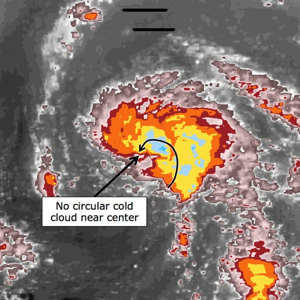
Shear Storms
Shear Storms are most easily recognized by a cloud pattern which appears almost flattened on one side, with the colors squeezed very close together. They may also appear with a pronounced swirl in the gray clouds just outside the main storm.
Shear storms can be difficult to identify, depending on how organized the clouds have become. They are experiencing vertical shear, when winds at the top are different from the winds at the bottom, causing the storm to tilt to one side. Because of this tilt, tall clouds are mostly displaced toward one side of the storm, away from the center.
You can identify a stronger Shear storm with the following traits:
- Center of gray swirl is closer to (or even within) the colored clouds
- The cold area (colored) has a tight swirl itself and is better organized
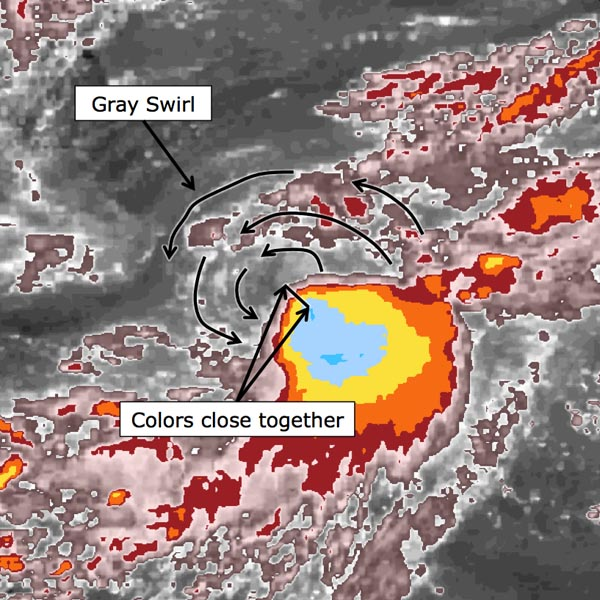
Other Storms
Sometimes you’ll encounter an image that doesn’t fit very well into any of these categories. These are a few of the possibilities that don’t fall into these storm types.
Post-Tropical Storms
Post-tropical storms are storms that have lost their tropical nature. They become more like mid-latitude storms. Typically they are made up of much warmer clouds (gray and pink) and have very long tails extending far from the main storm. Very often a storm becomes Post-Tropical toward the end of its life.
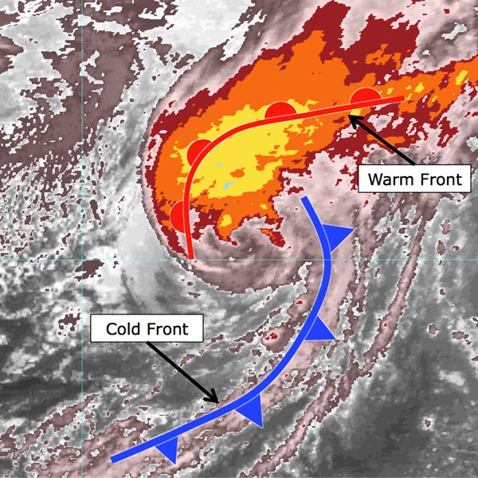
Edge
Since Earth is curved, and the satellites used to collect these images remain fixed in position above one place on the surface, a storm is usually not directly beneath a satellite. In fact, eventually the storm may move completely out of the satellite’s field of view. As the storm moves over the horizon, it can appear very distorted in the image, and may even be cut off by the horizon itself.
You will be able to recognize these cases because the image may appear very skewed, and a portion may appear black.
Note: If it is possible to do a classification anyway, you should do the classification as normal. Only choose this option if it is not possible to complete a classification.
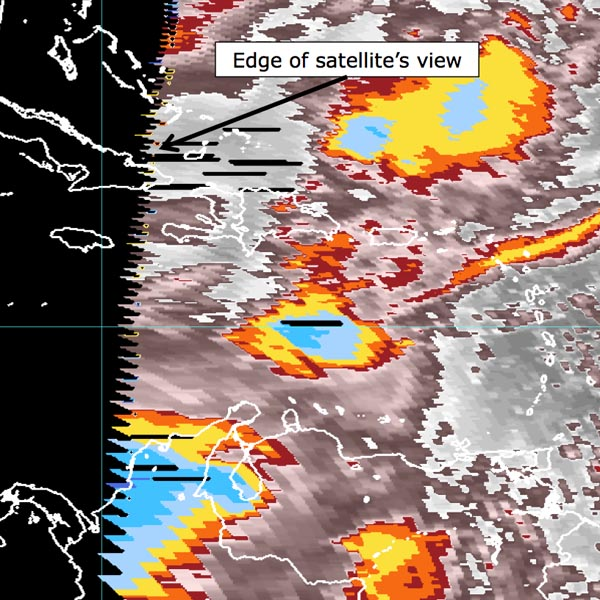
No Storm
Early in a storm’s lifetime it may not resemble a storm at all. In this case, the image will appear to contain a field of disorganized clouds, with no structure that can be classified. The image below has some tall clouds, but there’s no evidence of spiral bands that would indicate the storm is becoming more organized. In this case, select “No Storm”.
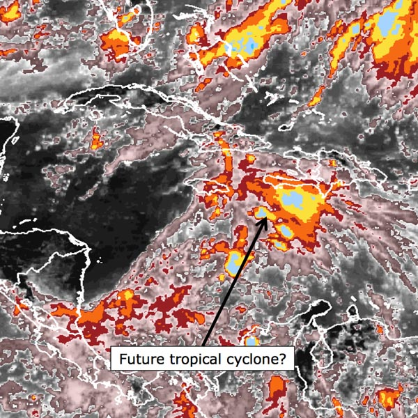
Click the center of the storm, then pick the size closest to the eye edge
A cyclone’s eye forms at its center of circulation, where descending air creates a mostly cloudless and rain free area. You can identify an eye by finding a very warm area near the center of the storm surrounded by a ring of very cold clouds. Often you are actually seeing straight through the storm to the land or ocean below. To pinpoint the center of the storm, simply find the center of the eye.
Storms with smaller eyes typically have tighter and stronger circulation, and therefore a stronger storm. You also need to determine the eye’s size. To do this, select the circle that best matches the size of the eye and drag it with your mouse so that it traces the eye. If you need to change the size, click on a different-sized circle and try again. For this purpose, you can think of the edge of the eye as the point where the colors are closest together.
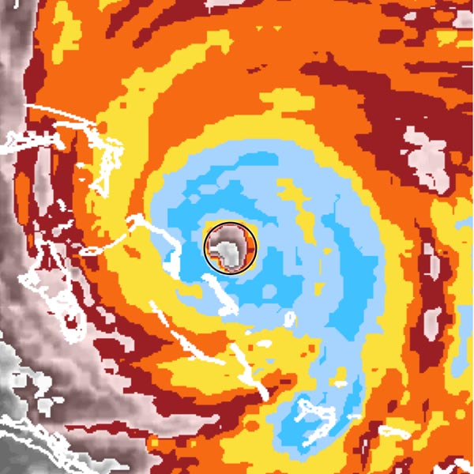
Finding the Center
In an Embedded Center storm the center is embedded within the coldest clouds; no eye is present. In order to find the center follow the swirl of clouds inward to a single point, traveling along a spiral. The center is not necessarily under the coldest clouds, so be careful not to get distracted by a spot of colder colors.
In the example below, you can see the clouds spiralling inward along the black arrows. It may be tempting to click the area of dark blue clouds, but if you follow the arrows all the way in, you’ll see that the focus of circulation is actually slightly to the southeast, shown here by the white crosshairs.
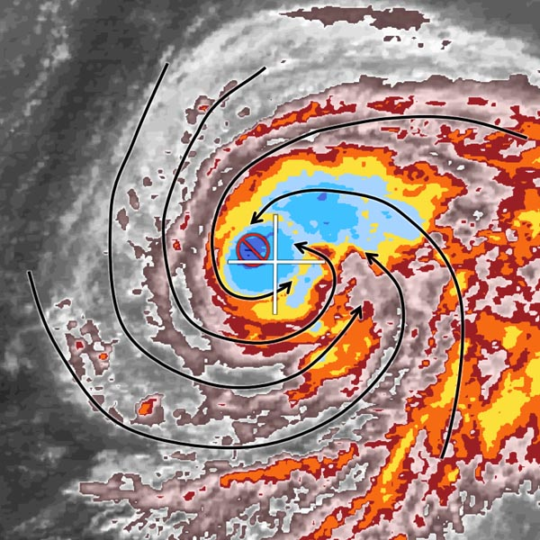
Click the center of the storm
As with the other storm types, the center of circulation in a Curved Band storm can be found by following the spirals inward to a single point.
Curved Band storms sometimes spiral around a wedge of warmer clouds. The center of the storm is often near where the cold spiral meets this warm wedge.
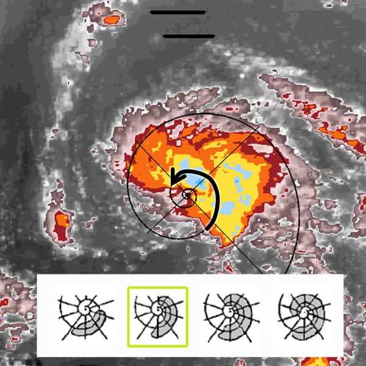
Click on the Storm Center
Tropical cyclones are known for their strong winds. Believe it or not, these storms can actually be blown over! These tilted storms are called Shear storms because they are encountering a cold front, or other large weather system, whose winds vary, or shear, with height. This shear tilts the storm over to one side.
The center of a Shear storm is the trickiest to find because the shear prevents tall clouds from developing on one side of the cyclone. This asymmetry makes it harder to find the center.
In some cases, like the example shown here, you can still see a small swirl in the gray and pink (warmer) clouds. If you see one of these, follow the swirl as it spirals into the center.
Sometimes these shallow clouds are difficult to find on infrared images. If you have trouble with the swirl method, look at the shield of cold clouds. In Shear storms, the colors will be very close together on one side of the storm, sometimes aligned in a straight line. That’s where the cold clouds are developing, before being blown away by the shear. The center of the storm will usually be nearby.
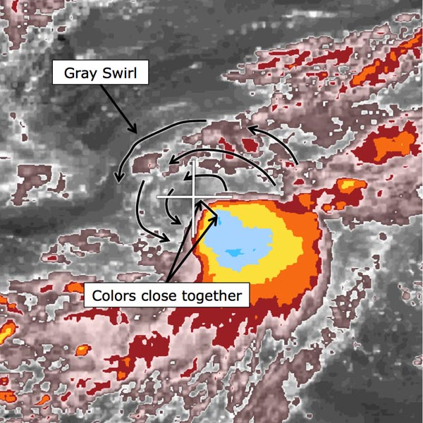
Which colors completely surround the eye?
For this step, you are looking for the coldest color which completely surrounds the eye of the cyclone, in an unbroken ring. It doesn’t matter how thick or thin the ring is, or even if it’s not circular, only that it is continuous, with no breaks, all the way around.
Keep in mind that these storms can be thought of as a layer cake, with warmer layers underneath the colder ones. For example, if you removed all of the light blue colors, you would see yellow beneath them, and orange beneath those. In the example below, the cyan ring doesn’t quite connect all the way around, but the light blue beneath it does. Since the light blue completes a ring, that means that yellow, orange, and all the layers of the cake beneath it also wrap all the way around. You only need to select light blue.
Cloud temperatures decrease with height, so you can identify the strongest storms by finding the coldest cloud tops. Using the infrared imagery that you see here, that task becomes very simple.
The eye of a tropical cyclone is surrounded by a ring of tall clouds called the eyewall. By identifying which colors surround the eye of the storm, you’ll determine how tall these clouds are, which helps estimate the strength of the cyclone itself.
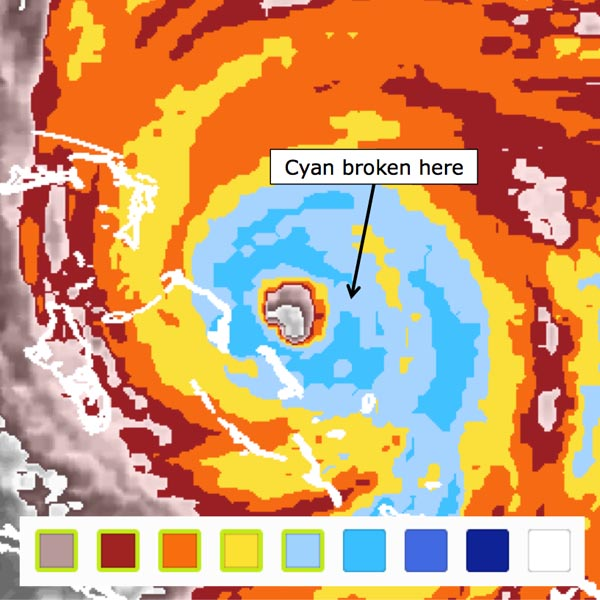
Choose the colors completely surrounding the eye that is at least 0.5° thick
This question is very similar to the previous one, except this time, you are specifically looking for colors of a certain thickness. Previously, you were only finding a continuous ring, no matter how thick or thin.
Click on the image and a small circle will appear that follows your mouse pointer around. Find the coldest color that completely surrounds the eye and is also as thick as that circle at all points around the ring. This tells us not only how tall the clouds are, but how widespread as well. Storms with a larger area of cold clouds are typically more intense.
In the last step, we found that light blue wrapped all the way around the storm. This light blue is thick enough in most places, but not southwest of the eye. In that region we find some yellow peaking through our measuring tool. That small bit of yellow is enough to eliminate the light blue for this step.
At first glance the yellow might not seem thick enough either. However, remember how a storm is like a layer cake. If one ring isn’t quite thick enough, imagine removing it and exposing the next warmer color below, and so forth until you find one thick enough. There is a yellow layer underneath the blue one, so we can consider these blues as part of the yellow. In that case, the yellow is more than thick enough.
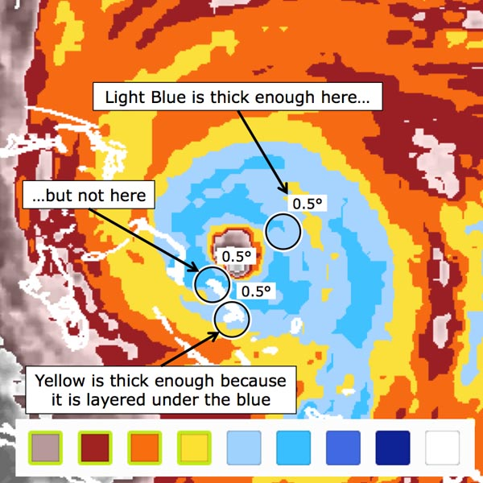
Does the band wrap less than a quarter, about a quarter, half or more?
Strong tropical cyclones often have long spiral bands. A band is defined as a spiral arm that is orange or colder, separated from the main storm by a wedge of red or warmer. For this step, you will determine how far the band wraps around the storm.
Choose an icon from the three below the image to indicate which best matches the amount of banding you see in the storm above. You’ll determine whether the band wraps less than a quarter-way around the storm, about a quarter-way around the storm, or half-way or more around the storm. Some storms don’t have any spiral bands at all. In those cases select the leftmost icon.
The example here has a wide band along the north side of the storm. This band is relatively short and it doesn’t wrap very far around the storm’s center. In this case, you’d pick the icon on the left.
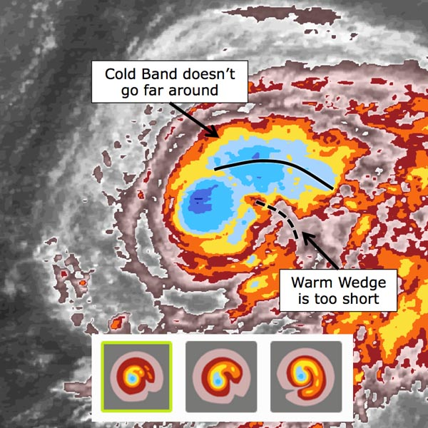
Which colors wrap most of the way around the band?
Colder, taller clouds release more energy into a tropical cyclone. We identify these taller storms in infrared satellite images by looking for colder cloud tops. Remember white and blue represent the coldest clouds and pink and grey represent the warmest clouds. As you might expect, stronger tropical cyclones will have more of these tall, cold clouds.
For this step, you are trying to find the primary color of the Curved Band itself. That will provide information on the tropical cyclone’s strength. Simply look at the band and pick the coldest color that extends along most of the band. In the example here, there are some patches of light blue, and even cyan, but they are too sparse to be considered widespread, so you would click yellow.
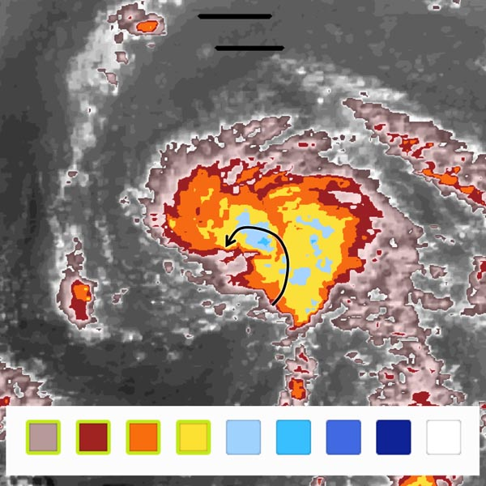
How far does the main band wrap?
The primary measure of a Curved Band storm’s strength is the length of the band itself. The longer the band, the stronger the storm. Focus on how far around the band wraps, and click on the picture that best matches it. In this example, the band wraps around about one-half of a full circle, so we’d click the second picture below.
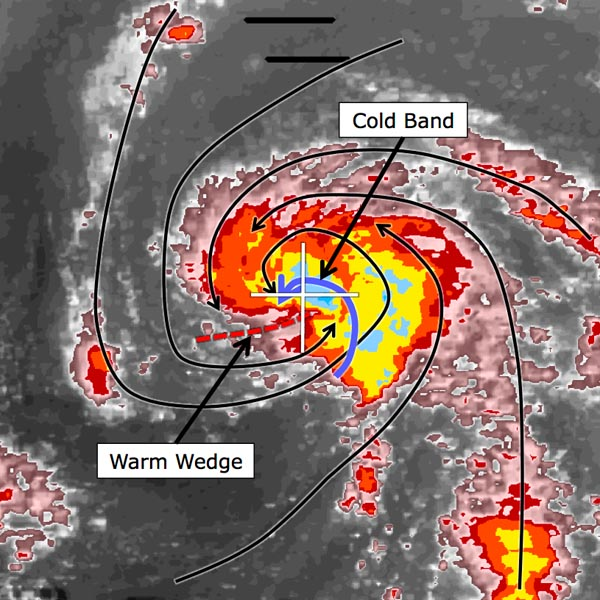
Click the red point nearest to the storm center that is associated with the main cloud feature
In this step, you are trying to find the distance from the center that you found to the storm’s main thunderstorms. This tells us how tilted or straight the storm is, and therefore, how strong it is. For this step, simply click on the edge of the cold clouds that is closest to the center that you marked in the last step.
In the example here, the center (marked with a white crosshair) is just outside the main thunderstorms. In some cases, the center will be within the cold colors, but we’ll still need to know how far the center is from the edge of the coldest clouds. Click the edge of the main storm (the nearest red point), and a second crosshair will appear. The distance between these clicks will tell us the storm’s strength.
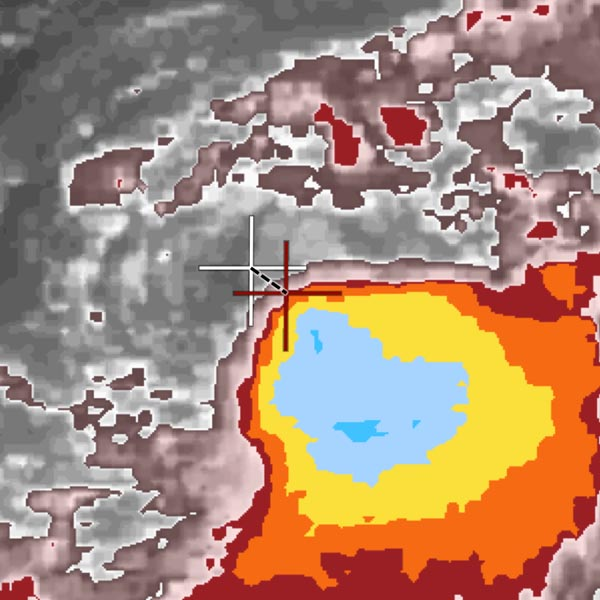
Climate scientists need your help classifying over 30 years of tropical cyclone satellite imagery.
The global intensity record contains uncertainties caused by differences in analysis procedures around the world and through time. Scientists are enlisting the public because patterns in storm imagery are best recognized by the human eye.
About Cyclone Center
CycloneCenter.org is a web-based interface that enables the public to help analyze the intensities of past tropical cyclones around the globe. The global intensity record contains uncertainties caused by differences in analysis procedures around the world and through time. Patterns in storm imagery are best recognized by the human eye, so scientists are enlisting the public. Interested volunteers will be shown one of nearly 300,000 satellite images. They will answer questions about that image as part of a simplified technique for estimating the maximum surface wind speed of tropical cyclones. This public collaboration will perform more than a million classifications in just a few months—something it would take a team of scientists more than a decade to accomplish. The end product will be a new global tropical cyclone dataset that provides 3-hourly tropical cyclone intensity estimates, confidence intervals, and a wealth of other metadata that could not be realistically obtained in any other fashion.
Introduction to Cyclone Center Images
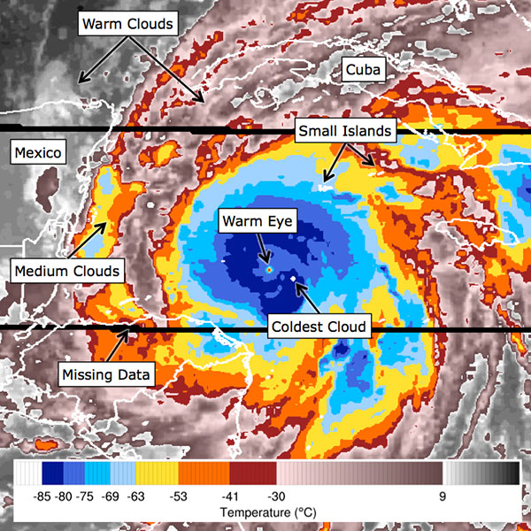
The images you see on Cyclone Center were observed by infrared sensors on weather satellites. These sensors provide an estimate of the temperature at the tops of clouds. Cloud top temperatures are very important because they give us an idea of how tall the clouds are. Temperature decreases with height in the lower atmosphere (up to 10 miles), so cold clouds are taller than warm clouds. Taller clouds are responsible for the heavy rain and thunderstorms that drive tropical cyclones.
In the Cyclone Center images, the cloud top temperatures are represented by a range of colors. The scale on this image to the left shows the temperatures in degrees Celsius that correspond with each color.
Black and gray are the warmest, indicating temperatures from 9°C (48°F) to 30°C (86°F). Often these will be the temperatures we experience at the land or ocean surface, but they can also be associated with very shallow clouds. Shades of pink go down to -30°C (-22°F). In our images, these are almost always associated with shallow clouds. Red, orange, and yellow come next, and they indicate medium-level clouds.
In most images, the coldest clouds you see will be shades of blue. Sometimes you’ll even see a cloud that’s so cold it shows up as white. These clouds are colder than -85°C (-121°F). Coastlines and political borders are also drawn in white, so make sure the white clouds are surrounded by dark blue. Otherwise, you might just be looking at a small island.
Sometimes there is a problem with parts of the satellite data. These missing data will show up as black lines in the images. Just ignore them and carry on with the analysis when you see them.
The Dvorak Technique
Prior to the 1960s, tropical cyclones were rarely observed unless they moved close to populated areas, happened to move near an unfortunate ship or occurred in the North Atlantic or Western Pacific (where routine aircraft flights monitored tropical weather systems). Fortunately, geostationary satellites were developed and launched during the 1960s. These satellites orbit the earth at very high altitudes (~22,300 miles or 35,900 km), allowing them to orbit at the same speed as the earth rotates. This allows for the satellite to always “see” the same large area and thus continuously monitor the oceans for tropical cyclone activity.
Despite this important advance, scientists and forecasters still had little hope of determining how strong the winds were (“intensity”) in a tropical cyclone from just looking at a picture of it. Only a very small fraction of tropical cyclones were measured directly by specially designed aircraft. However, it soon became apparent to a gentleman named Vernon Dvorak that the intensity of a tropical cyclone could be skillfully approximated by simply analyzing the cloud patterns and temperatures from a single satellite image. Dvorak developed and improved his method (now called the “Dvorak Technique”) in the 1970s and early 1980s.
The technique consists of a set of 10 steps, which can be simplified to produce the answers to four important questions:
- Where is the center of the system?
- What type of cloud pattern best describes the system?
- How organized or intense is the cloud pattern?
- Does the system look stronger or weaker than 24 hours ago?
Sometimes the answers to these questions are not clear, making the application of the Dvorak technique subjective. Tropical cyclone analysts and forecasters must be trained to successfully apply the many rules and constraints that the technique makes. Even then, experts frequently disagree, which has led to numerous inconsistencies in the tropical cyclone record.
The Dvorak technique was adopted by many of the world’s tropical cyclone forecast centers and remains today as one of the most important tools for estimating tropical cyclone intensity. In this project, you are using a version of the Dvorak technique for classifying tropical cyclones that have formed since the late 1970s. We hope that the application of thousands of classifiers will help resolve the differences in the global tropical cyclone record and improve our understanding of how the nature of these storms may have changed through time.
The team
Organizations
Cooperative Institute for Climate and Satellites
The Cooperative Institute for Climate and Satellites (CICS), established under a cooperative agreement with the National Oceanic and Atmospheric Administration (NOAA) in 2009, is a consortium of research institutions that focuses on enhancing the collective interdisciplinary understanding of the state and evolution of the full Earth System. The CICS consortium is led by the University of Maryland, College Park and North Carolina State University on behalf of the University of North Carolina (UNC) System. CICS-NC is hosted by NC State University.
NOAA'S National Climatic Data Center (NCDC)
NCDC maintains the world's largest climate data archive and provides climatological services and data to every sector of the United States economy and to users worldwide. The archive contains paleoclimatic data to centuries-old journals to data less than an hour old. The Center's mission is to preserve these data and make them available to the general public, business, industry, government and researchers.
University of North Carolina at Asheville
UNC Asheville, the only designated public liberal arts university in North Carolina, offers more than 30 majors ranging from chemistry, atmospheric sciences and environmental studies to art, new media and international studies. The university is known for its award-winning undergraduate research and humanities programs.
The Zooniverse
The Zooniverse and the suite of projects it contains is produced, maintained and developed by the Citizen Science Alliance. The member institutions of the CSA work with many academic and other partners around the world to produce projects that use the efforts and ability of volunteers to help scientists and researchers deal with the flood of data that confronts them.
Science team
Chris Hennon
Chris Hennon is an associate professor of atmospheric sciences at the University of North Carolina at Asheville. Specializing in tropical cyclone formation, Chris came to Asheville after spending two years as a visiting scientist at the U.S. National Hurricane Center in Miami, Florida. Chris enjoys golf, racquetball, and chess in his free time.

Ken Knapp
Ken Knapp is a meteorologist at NOAA’s National Climatic Data Center in Asheville, NC. His research interests include using satellite data to observe hurricanes, clouds, and other climate variables. His career took a tropical turn in 2005 when an NCDC customer requested satellite imagery of all tropical cyclones, rejuvenating an interest in hurricanes that began with his 7th grade science fair project.
Carl Schreck
Carl Schreck is a research meteorologist at the Cooperative Institute for Climate and Satellites (CICS-NC). He is exploring tropical weather patterns to better understand and predict how hurricanes and other tropical cyclones form. Carl’s fascination with hurricanes began when Hurricane Fran struck his hometown of Raleigh, NC in 1996.
Scott Stevens
Scott Stevens is a research associate at the Cooperative Institute for Climate and Satellites (CICS-NC). He is working on the development of a new rainfall dataset using NOAA’s network of NEXRAD radars, specializing in data analysis and organization. He is a private pilot and enjoys baseball and traveling in his spare time.
Paula Hennon
Paula Hennon is a tropical meteorologist and research scholar at the Cooperative Institute for Climate and Satellites (CICS-NC). Her research interests are tropical cyclone clouds and the resulting ocean wind, wave and temperature interactions. She is happiest with her head in the clouds and her feet (or her horse’s hoofs) in the sand.
Development team
Kelly Borden
Kelly is an archaeologist by training but an educator by passion. While working at the Museum of Science and Industry and the Adler Planetarium she became an enthusiastic science educator eager to bring science to the masses. When not pondering the wonders of science, Kelly can often be found baking or spending time with her herd of cats – Murray, Ada, & Kepler.

Brian Carstensen
Brian is a web developer working on the Zooniverse family of projects at the Adler Planearium. Brian has a degree in graphic design from Columbia College in Chicago, and worked in that field for a number of years before finding a niche in web development.

Chris Lintott
Chris Lintott leads the Zooniverse team, and in his copious spare time is a researcher at the University of Oxford specialising in galaxy formation and evolution. A keen popularizer of science, he is best known as co-presenter of the BBC's long running Sky at Night program. He's currently drinking a lot of sherry.

David Miller
As a visual communicator, David is passionate about tellings stories through clear, clean, and effective design. Before joining the Zooniverse team as Visual Designer, David worked for The Raindance Film Festival, the News 21 Initiative's Apart From War, Syracuse Magazine, and as a freelance designer for his small business, Miller Visual. David is a graduate of the S.I. Newhouse School of Public Communications at Syracuse University, where he studied Visual & Interactive Communications.

Michael Parrish
Michael has a degree in Computer Science and has been working with The Zooniverse for the past three years as a Software Developer. Aside from web development; new technologies, science, AI, reptiles, and coffee tend to occupy his attention.

Arfon Smith
As an undergraduate, Arfon studied Chemistry at the University of Sheffield before completing his Ph.D. in Astrochemistry at The University of Nottingham in 2006. He worked as a senior developer at the Wellcome Trust Sanger Institute (Human Genome Project) in Cambridge before joining the Galaxy Zoo team in Oxford. Over the past 3 years he has been responsible for leading the development of a platform for citizen science called Zooniverse. In August of 2011 he took up the position of Director of Citizen Science at the Adler Planetarium where he continues to lead the software and infrastructure development for the Zooniverse.
Click the storm image that appears stronger ?
Pick the cyclone type, then choose the closest match.
Click the center of the storm. ?
Click the center of the storm, then pick the size closest to the eye edge. ?
Which colors completely surround the eye? ?
Choose the colors completely surrounding the eye at least 0.5° thick. ?
Drag your mouse over the image to reveal a measuring tool.
Choose the image that matches the banding feature. ?
Which colors wrap most of the way around the band? ?
How far does the main band wrap? ?
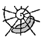 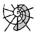 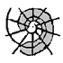
Click the nearest red point to the storm center. ?
You've finished a set from STORM
Don't forget to try out the detailed classification interface!
Welcome, Username!
So far, you've completed 0 images.